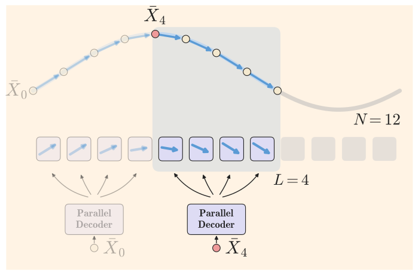
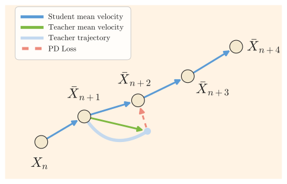
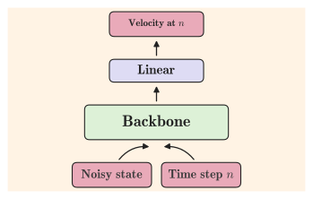
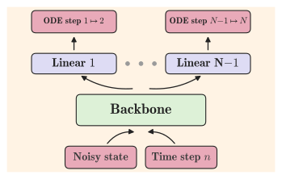
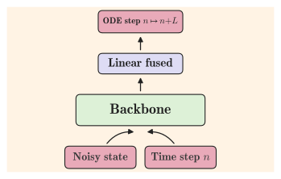

核心思想：不是「合并大步」，而是「并行预测多步」/ One evaluation, L steps
传统轨迹式蒸馏（Progressive Distillation、Consistency、Flow Maps）的思路是：把教师在多个小区间上的更新合并成一个大步，让学生一次跳过去。
PDD 反其道而行 —— 把时间域离散成 N 个区间、分组为大小为 L 的块，学生一次前向推理同时给出块内 L 个区间的平均速度，
各自迈小步，从而一次评估推进 L 个区间。
离散化
把采样时间 [0,1] 切成 N 个小区间，再分成大小为 L 的块。
并行预测
对每个块，学生一次推理输出 L 个子区间各自的平均速度，而不是一个大方向。
块步推进
按各自的步长迈小步，一次评估跨过 L 个区间；重复 N/L 次得到最终样本，即 NFE = N/L。
背景：生成为什么慢？为什么要蒸馏？/ Why distillation
扩散 / 流匹配模型生成 = 解一个常微分方程（ODE）。经典求解器每步只推进一个小区间，往往需要上百次网络推理 （如 Wan2.1 教师用 UniPC 50×2 NFE）。把模型蒸馏成「少数几步」的生成器，是当前加速的主流路线，分为两大流派：
| 轨迹式 Trajectory-based | 分布式 Distribution-based | |
|---|---|---|
| 思路 | 学生复刻教师的采样轨迹（逐步对齐） | 只对齐学生 / 教师的边际分布，不苛求轨迹 |
| 代表 | Progressive Distillation、Consistency Models、Flow Maps、Pi-Flow、PDD（本页） | ADD/LADD（GAN）、DMD/DMD2（VSD）、rCM、AnyFlow |
| 优点 | 忠实轨迹、天然保留多样性 | 视频大模型上质量高、效果好 |
| 痛点 | 搬到视频上质量崩 / 训练贵（依赖 JVP、有限差分） | loss 难调、易模式坍缩 → 多样性差、运动少甚至静止 |
视频蒸馏的 SOTA（DMD2、AnyFlow、rCM）几乎全是分布式的，靠 VSD/对抗损失 —— 代价是模式坍缩。PDD 证明：纯回归的轨迹式方法也能在视频上做到 SOTA， 前提是「把难学的整块大步，拆成好学的多个子区间小步」。
原理：并行解码器 / Parallel decoder
流模型的速度场 vt(x) 定义了 ODE。把时间离散后，每个区间上的精确一步可以写成「步长 × 平均速度」的形式。
PDD 的学生模型学的就是：给定块起点状态，一次推理输出块内所有子区间的平均速度。

三个关键数学对象
A 精确解与平均速度（教师的世界）
$$X_{n+1} = X_{n} + (t_{n+1}-t_{n})\,u_{n}(X_{n}), \qquad u_{n}(X_{n}) = \frac{1}{t_{n+1}-t_n}\int_{t_n}^{t_{n+1}} v_t(X_t)\,dt$$
un 是区间 [tn, tn+1] 上的平均速度。Euler 用它近似为起点瞬时速度 vtₙ；Midpoint 则近似为中点速度，精度更高（训练时可选，见 §4）。
B 并行解码器（学生要学的映射）
$$\bar u^{\theta}_{n}(k \mid X_{n}) \;\approx\; u_{k}(X_{k}), \qquad k = n,\dots,n+L-1$$
给定块起点状态 Xn，一次前向推理输出 L 个速度 ūθn(·|Xn) ∈ 𝓧L。
关键前提：块内状态序列 Xn+1,…,Xn+L 被精确解与起点完全确定 —— 所以「并行预测」这个目标是良定义的。
C 并行化过程与块步规则（训练 / 推理怎么用）
$$\bar X_{k+1} = \bar X_{k} + (t_{k+1}-t_k)\,\bar u^{\theta}_{n}(k \mid X_{n}),\qquad \bar X_{n+L} = X_n + \sum_{k=n}^{n+L-1}(t_{k+1}-t_k)\,\bar u^{\theta}_{n}(k\mid X_{n})$$
训练时沿 X̄ 走完整个块（一次学生推理）；推理时用右边的块步规则直接跨过 L 个区间。重复 N/L 次块步，就得到 NFE = N/L 的采样。
训练：PD Loss —— 一个纯回归目标 / On-policy regression
PDD 的目标是把学生的每个输出对齐到教师在学生轨迹状态上的平均速度（用 Euler / Midpoint 近似）。训练是 on-policy 的：目标总在学生自己走到的地方求值。
LOSS 并行解码损失
$$\mathcal{L}_{\mathrm{PD}}(\theta) \;=\; \mathbb{E}\Big[\big\|\bar u^{\theta}_{n}(k\mid X_{n}) \;-\; u_{k}\big(\mathrm{sg}(\bar X_{k})\big)\big\|^{2}\Big]$$
- 块起点
n与块内下标k均匀采样；起点状态Xn ~ ptₙ用插值过程采样（或有数据时直接构造）。 X̄k是学生自己 roll out 的块内状态 —— on-policy：目标永远在学生当前轨迹上求值，防止训练 / 推理分布偏移。sg= stop-gradient：梯度不穿过 rollout，省显存省算力（这是它便宜的关键）。- 教师平均速度
uk用 Euler（1 次教师推理）或 Midpoint（2 次）近似。 - 每次迭代只监督一个随机子区间
k，但期望上覆盖所有头 —— 单个子区间的信号累积成整块平均速度的学习。

Data-free 训练（视频 / 音频的关键）
高质量视频数据稀缺，因此 PDD 提供在线 on-policy 无数据训练：从纯噪声 X0 ~ p0 出发，
交替执行「优化步」与「推进步」—— 用学生当前输出（stop-grad）把状态推进一个块，下一迭代继续。
Qwen-Image、Wan2.1、LTX-2.3 全部走这条路线；教师侧的 CFG、cross-modal / spatiotemporal skip 引导全部折进教师目标，学生推理时不需要额外评估。
中间时刻的速度场更温和，回归目标更良性；等价于给同一个块提供 L 个监督点而不是 1 个。论文用「块内曲率非平凡」验证学生确实学到了块内的非线性结构（见附录）， 并给出命题：在可实现假设下，PD loss 的极小值点使得学生轨迹 = 教师轨迹（归纳证明）。
架构与层融合：训练 N 个头，推理融合成 1 个 / Layer fusion
学生复用教师 backbone，只把最后一层线性层重复 N 次（每个时间格点一个头）。推理时因为「线性层的加权和仍是线性层」， 一个块的方向可以精确融合成一个线性层 —— 推理算力、显存与教师完全相同。



MATH 融合公式
$$v_t(x) = W\,H_t(x) \quad\Rightarrow\quad \bar u^{\theta}_n(k|x_n) = W^{\theta}_k\,H^{\theta}_{t_n}(x_n)$$
$$\bar X_{n+L} = \bar X_n + (t_{n+L}-t_n)\,W^{\theta}_{n:n+L}\,H^{\theta}_{t_n}(\bar X_n), \qquad W^{\theta}_{n:n+L} = \sum_{k=n}^{n+L-1}\Delta_k W^{\theta}_k,\;\; \Delta_k = \frac{t_{k+1}-t_k}{t_{n+L}-t_n}$$
块方向是 L 个子方向按步长加权的平均 —— 因为每个 Δk 是标量，权重可以直接折进线性层。共享 backbone 学的是「块区间上的平均速度」表示，
N 个线性头把它分解成并行子区间预测 —— 这就是「不回归导数（无 JVP / 有限差分），直接分解」的含义。
训练时需要每个子区间各自的方向（用于逐子步的监督与 rollout），所以保留 N 个头；推理时只需要块的加权平均方向，所以融合成 1 个头。 推理代价 = 教师代价（同 backbone、单线性层、同显存）。
可变 NFE：一个模型，多档速度 / Variable NFE
为什么用 N 个（格子级）头而不是 L 个（块级）头？因为 N 个头的模型天然支持任意块大小：推理时按目标 NFE 选块大小 L = N / NFE。
训练时块大小在 [Lmin, Lmax] 内随机变化，一次训练覆盖所有目标档位 —— 不需要像 flow maps 那样引入第二个时间坐标重新训练。
| 推理档位 NFE | 块大小 L（以 N=64 为例） | 每次评估推进 | 总评估次数 |
|---|---|---|---|
| 2 | 32 | 32 个区间 | 2 |
| 4 | 16 | 16 个区间 | 4 |
| 8 | 8 | 8 个区间 | 8 |
| 16 | 4 | 4 个区间 | 16 |
实际配置：ImageNet 用 N=128（Euler）/ 64（Midpoint）；T2I / T2V 用 N=256（Euler）/ 128（Midpoint），配 shift 时间重参数化，支持 2 / 4 / 8 NFE（LTX-2.3 为 4 / 8）。
交互演示：为什么 PDD 的块步能「精确命中」曲线？/ Play with it
下面是一个二维玩具流：真实轨迹是一条螺旋曲线（教师用细积分近似）。绿色折线是 PDD 学生 —— 每次「网络评估」预测块内 L 个子区间方向，一次推进 L 个区间。红色虚线是朴素大步 Euler（同样的评估次数，但每次只沿起点瞬时速度直线跳）。 调一调 NFE，看看两者差距。
块步的方向是块平均速度：u = (X(tn+L) − X(tn)) / (tn+L − tn)，这正是连接块两端点的弦方向。
如果学生完美预测了每个子区间的平均速度，加权求和就精确等于整块的平均速度 —— 一步直达真实终点。
而朴素大步 Euler 用的是起点处的瞬时速度（切线方向），螺旋曲率大，切线一下就冲离曲线。M 越大（块越小），两者都越接近，但 PDD 始终用同样的评估次数换来更准的落点。
实验效果：SOTA + 更好的多样性 / Results
IMG ImageNet-256（1 NFE，FID ↓）
| 方法 | FID |
|---|---|
| Pi-Flow | 2.85 |
| PDD – Euler | 2.73 |
| PDD – Midpoint | 2.69 |
| FreeFlow | 1.45 |
更简单的目标（无高斯混合、无额外网络），还支持多档 NFE。
T2I Qwen-Image 20B（OneIG ↑，4 NFE）
| 方法 | OneIG | 多样性 |
|---|---|---|
| DMD2 | 0.524 | 0.095 |
| Pi-Flow | 0.533 | 0.182 |
| PDD – Euler | 0.535 | 0.192 |
| PDD – Midpoint | 0.538 | 0.174 |
DMD2 质量高但多样性只有 0.095 —— 模式坍缩的典型表现；PDD 几乎翻倍。
T2V Wan2.1 14B（VBench，4 NFE）
| 方法 | Overall ↑ | Quality ↑ | 多样性 ↑ |
|---|---|---|---|
| AnyFlow | 84.95 | 85.70 | 0.0786 |
| rCM | 84.92 | 85.43 | — |
| DMD2 | 84.40 | 85.16 | 0.0568 |
| PDD (short) | 84.92 | 85.71 | 0.0791 |
| PDD (long) | 84.69 | 85.69 | 0.0846 |
质量分最高；多样性（V-JEPA2 两两距离）全面领先；训练仅 200–3000 迭代。
T2V+A LTX-2.3 22B（8 NFE，10s 720p 含音频）
- 无数据训练仅 250 迭代，8 NFE 即达到与官方蒸馏模型相当或更好的质量。
- Gemini 3.1 Pro 盲评（300 组配对对比）：PDD 赢 142 / 平 35 / 输 123，四轴均分 2.62 vs 2.59。
- 教师需 4×30 NFE（含 CFG 等引导），PDD 只需 8 NFE。
效果视频（来自论文项目页）
「国王与士兵列队」—— 宏大场景 + 金属碰撞声
「森林中微笑的年轻女子」—— 环境音 + 呼吸感
「愤怒争吵」—— 情绪张力 + 台词对白
「拳击擂台上的黑猫与白猫」—— 高速对打
「巨鸟飞向哥特教堂」—— 运镜 + 运动连贯
「秋千上的孩童」—— 摆动幅度与运动量
官方对比页面还展示了 PDD 相对 DMD2 / AnyFlow 在相同提示、相同噪声下的生成 —— PDD 的运动量和帧间一致性明显更好（LTX 视频请点击播放器取消静音听声音）。
与相关工作对比 / Positioning
| Flow Maps（Eulerian / Lagrangian） | Pi-Flow | PDD（本文） | |
|---|---|---|---|
| 蒸馏对象 | 任意两时刻的平均速度 | 连续时间瞬时速度 v | 离散区间的平均速度 u |
| NFE 可变性 | 可变 | 固定 | 可变（训练时随机块大小） |
| JVP / 有限差分 | 需要 | 免 | 免 |
| 推理时的头 | 线性 | 高斯混合 | 融合线性（与教师同代价） |
| 额外网络 / 多阶段 | — | 策略头 | 无，单阶段 |
PDD 与 Pi-Flow 最接近，但把「连续时间 + 高斯混合策略头 + 固定 NFE」简化成「离散时间 + 可融合线性头 + 可变 NFE」； 与 Lagrangian flow maps 的联系在于：对 flow map 损失关于 s 积分，就得到 PDD-like 目标 —— 但 PDD 不需要回归位移的导数（无需 JVP）。
对比学习：DMD2 —— 分布式蒸馏的代表作 / DMD2 vs PDD
把 PDD 讲透之后，最好的对照样本就是 DMD2（Improved Distribution Matching Distillation，Yin et al.，MIT × Adobe，NeurIPS 2024 Oral）—— 它是分布式路线的集大成者，也是 PDD 论文里的主要基线。两者代表了蒸馏的两种哲学：匹配分布 vs 复刻轨迹。
DMD2 一句话理解
不要求学生复刻教师的采样路径，只要求学生输出的分布 = 教师输出的分布。做法：最小化两者加噪后的近似 KL 散度， 其梯度恰好等于两个 score 函数之差——一个来自冻结的教师（建模真实分布），一个是在线训练的「假样本 critic」（建模学生输出分布）：
$$\nabla\mathcal{L}_{\mathrm{DMD}} \;=\; -\,\mathbb{E}_{t}\Big[\big(s_{\mathrm{real}}(F(G_\theta(z),t),t) - s_{\mathrm{fake}}(F(G_\theta(z),t),t)\big)\tfrac{\partial G_\theta(z)}{\partial\theta}\Big]$$
学生被「score 差」这股力不断推向真实数据分布——它不知道教师的路径长什么样，只关心终点分布对不对。
DMD2 的三板斧（相对 DMD1）
去掉回归损失
DMD1 需要教师用完整采样链预计算百万级「噪声–图像对」做回归正则——贵，且把学生质量上限锁死在教师。DMD2 彻底移除。
TTUR 双时间尺度
去掉回归损失后训练不稳，作者诊断出根因：fake critic 对学生输出分布的估计不准。解法：每次生成器更新，fake score 网络更新 5 次。
GAN 头 + 多步生成
加一个判别器区分学生样本与真实图像，弥补教师 score 的近似误差；配合 backward simulation（训练时模拟推理式多步输入）支持 4 步生成。
成绩 DMD2 的高光
- ImageNet-64 1 步 FID 1.28、COCO 2014 zero-shot FID 8.35（4 步 SDXL），超过教师而推理成本降 500×
- 人类偏好分数高——在 Qwen-Image 蒸馏版（Lightning-v2）上 HPSv2 / PickScore 领先 PDD
- 成为视频蒸馏的默认组件：FastGen、rCM、AnyFlow 等都以 VSD/DMD 为核心损失
代价 DMD2 的痛点
- 三个网络：学生 + fake critic + GAN 判别头，显存和工程复杂度高
- 交替优化（G ↔ fake score ↔ D），超参敏感，训练曲线波动
- 模式坍缩：分布级对齐不约束「逐样本」行为 → 多样性显著下降，视频上表现为运动少甚至静止
- NFE 固定：每个步数档位要单独蒸馏一个模型
正面对比：DMD2 vs PDD
| DMD2（分布式） | PDD（轨迹式） | |
|---|---|---|
| 学习目标 | 匹配输出分布（近似 KL） | 回归教师 ODE 步（MSE） |
| 监督信号 | score 差 s_real − s_fake | 教师在学生状态处的平均速度 |
| 额外网络 | fake critic + GAN 判别头 | 无（教师 + 学生） |
| 训练数据 | GAN 头需要真实图像 | 可完全 data-free |
| 优化方式 | 交替 / 对抗，超参敏感 | 单一回归，稳定收敛 |
| NFE 灵活性 | 固定（每档单独训练） | 一个模型多档 2/4/8 |
| 训练成本构成 | G 更新 + 5×fake critic 更新 + D 更新 | 1 次学生 + 1~2 次教师推理 |
| 单步 FID（ImageNet-64 / 256） | 1.28（64×64，SOTA） | 2.69（256×256，SiT-XL） |
| 多样性（OneIG，Qwen 4-NFE） | 0.095 | 0.192（≈2 倍） |
| 视频多样性（Wan 14B，V-JEPA2） | 0.0568 | 0.0846（long） |
| 视频运动量 | 偏少，易静止 | 显著更多（VBench 动态度更高） |
注：FID 一行两者基准不同（DMD2 用 ImageNet-64，PDD 用 ImageNet-256 SiT-XL），数字不可直接横比，仅示意各自量级；多样性 / 运动数据来自 PDD 论文的同基准复评，可直接对比。
分布匹配只约束「整体分布像不像」——学生把概率质量集中在少数几个「安全」的高分模式上，KL 依然可以很低， 于是同一提示下不同噪声的输出趋于雷同（图像上 = 姿势雷同，视频上 = 运动消失）。轨迹式回归则约束「每个噪声到数据的映射都和教师一致」， 教师分布的多样性被逐点搬运到学生，所以 PDD 的多样性与运动量天然接近教师。代价是：轨迹式方法对「分布级瑕疵」更宽容—— 教师如果差，学生跟着差；这正是 DMD2 用 GAN 头「超越教师」的空间。
- 选 DMD2 系：追求极致单步质量与人类偏好（成品图 / 营销图）；有真实数据；能承受多网络训练工程。
- 选 PDD：要保多样性与运动（视频 / 世界模型）；想要训练简单稳定、一模型多档 NFE、或根本没有数据。
- 领域趋势：rCM、AnyFlow 等用「VSD + 轨迹项」混合正则——而 PDD 证明纯轨迹回归也能打平，方向上在往「简单、稳、便宜」收敛。
局限与未来方向 / Limitations
- 8-NFE 反直觉退化：ImageNet 上 NFE=8 的 FID 反而变差 —— 作者归因于 guidance scale 与档位错配（每档 NFE 各有最优引导强度）。
- 训练期显存：训练时最后一层是 N 倍宽的（虽然相对 backbone 占比小），大模型上仍是工程取舍。
- 超参敏感点：时间重参数化（shift）与 batch size 最关键，Midpoint 一致优于 Euler（代价是 2 次教师推理）。
- 数据依赖设置：大规模实验走的是 data-free 路线；带数据的蒸馏（如 ImageNet）之外仍是未来工作。
- 自适应块大小：块大小可在评估后再选 —— 用 verifier / 置信度判据决定每步跳多远。
- 推广到离散自回归模型：把「并行解码」原则扩展到非扩散类生成模型。